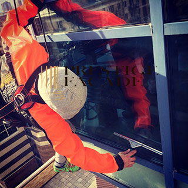
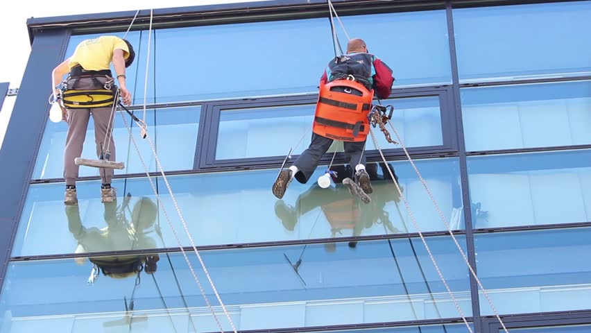

Высотная мойка фасадов методом промышленного альпинизма представляет собой комплекс клиниговых работ, которые осуществляются за счёт вывеса специалистов с кровли здания, используя специальное снаряжение. Данный вид работ особенно актуален в Санкт-Петербурге из-за особенностей архитектуры города и исторического центра. В нем возникает необходимость, когда фасад имеет высоту более 20 метров и эксклюзивную архитектуру с труднодоступными зонами.
Преимущества помывки любых фасадов методом промышленного альпинизма - в высоком качестве очистки остекления от атмосферных осадков, высолов, нагара, строительной пыли и грязи. Каждый миллиметр рабочей поверхности подлежит ручной обработке с использованием высококачественных моющих средств. Одно здание могут обслуживать несколько бригад одновременно,что позволяет сократить срок производства работ. Нанесение защитного средства от влияния окружающей среды,пыли и грязи (Гидрофобизация) возможно только методом промышленного альпинизма.
Специалисты Prestige Facade - cleaning ежегодно проходят курсы повышения квалификации и совершенствуют свои навыки. Все сотрудники имеют необходимую квалификацию и подтверждающие документы о допуске к высотным работам. Компанией накоплен богатый опыт высотных клиниговых работ не только с остеклением фасадов. Нашими заказчиками являются крупные производства, фабрики, заводы с высокой сложностью работ и соблюдением необходимых требований безопасности.